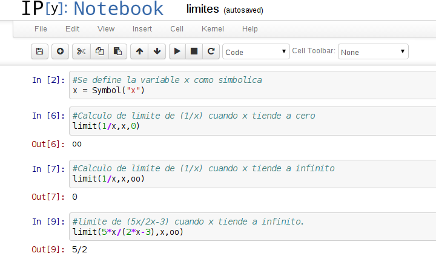

Cálculo de límites con la librería sympy
Posted on sáb 21 febrero 2015 in Tutorial Python • 1 min read
La librería Sympy permite realizar cálculo de límites, derivadas, integrales entre otras cosas, usando notación simbólica.
La documentación de sympy la pueden revisar en el siguiente enlace.
Para instalar sympy e ipython-notebook en Debian se ejecuta:
apt-get install python-sympy ipython-notebook
En este caso se mostrará como realizar cálculo de límites con sympy.
Se ejecuta un servidor notebook ( en el siguiente enlace encontrarán el archivo usado para este artículo).
$ipython notebook
Se abre el navegador en http://localhost:8888 y se crea un notebook (para los que bajaron el enlace abren el archivo que se menciono anteriormente):
En este caso se usará un script que se llama limites.py:
#!/usr/bin/env python
# coding: utf-8
from sympy import *
#Se define la variable x como simbolica
x = Symbol("x")
#Calculo de limite de (1/x) cuando x tiende a cero
valor = limit(1/x,x,0)
print valor
#Calculo de limite de (1/x) cuando x tiende a infinito
valor = limit(1/x,x,oo)
print valor
#limite de (5x/2x-3) cuando x tiende a infinito.
valor = limit(5*x/(2*x-3),x,oo)
print valor
El resultado de ejecutarlo es el siguiente:
oo
0
5/2
Para el primer caso el resultado es infinito, para el segundo es cero y para el último es 2.5.
A continuación se deja una imagen del uso de ipython notebook:

¡Haz tu donativo! Si te gustó el artículo puedes realizar un donativo con Bitcoin (BTC) usando la billetera digital de tu preferencia a la siguiente dirección: 17MtNybhdkA9GV3UNS6BTwPcuhjXoPrSzV
O Escaneando el código QR desde la billetera: